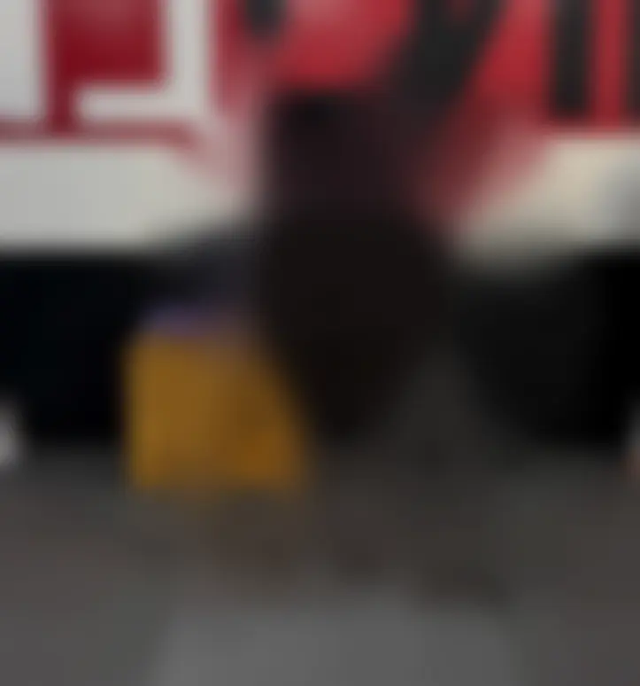
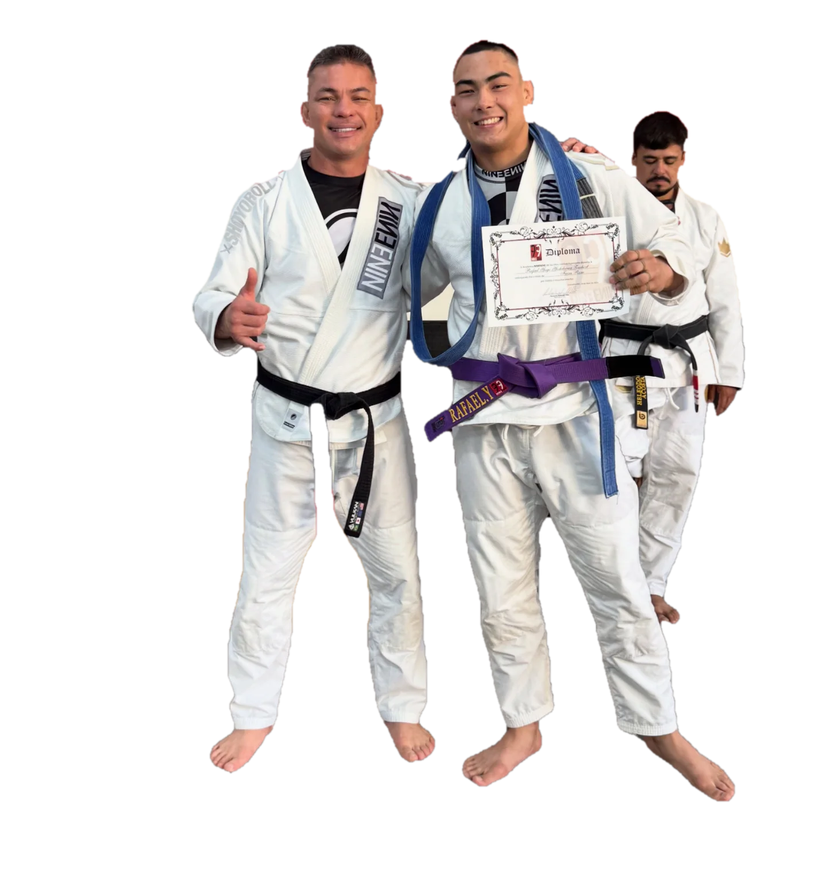
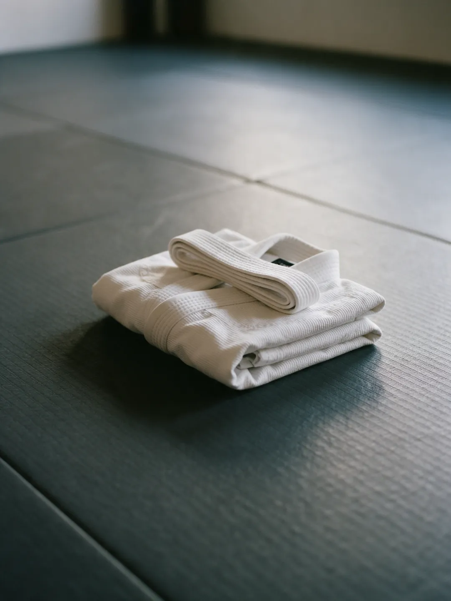
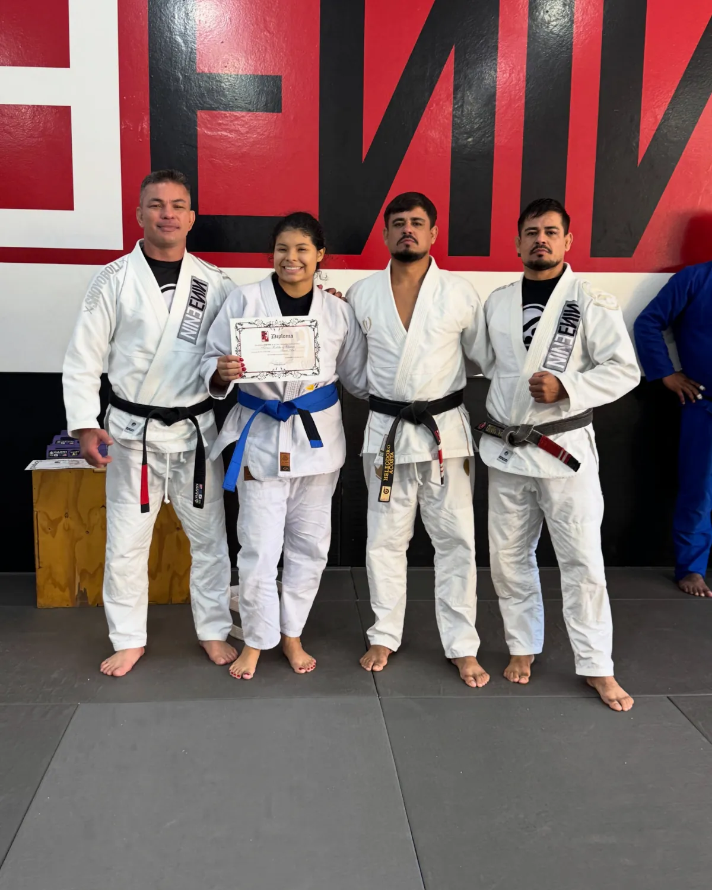
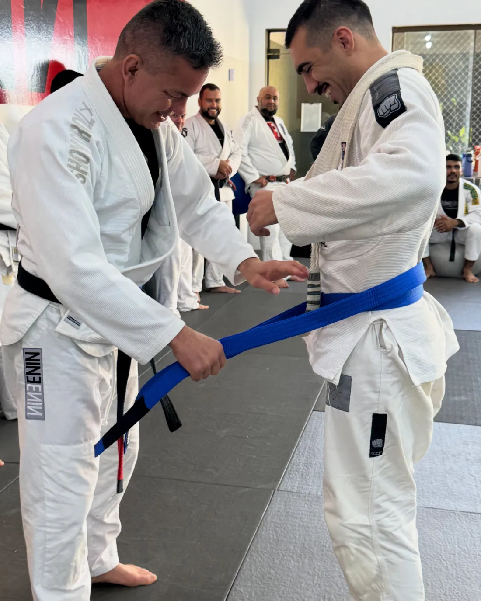
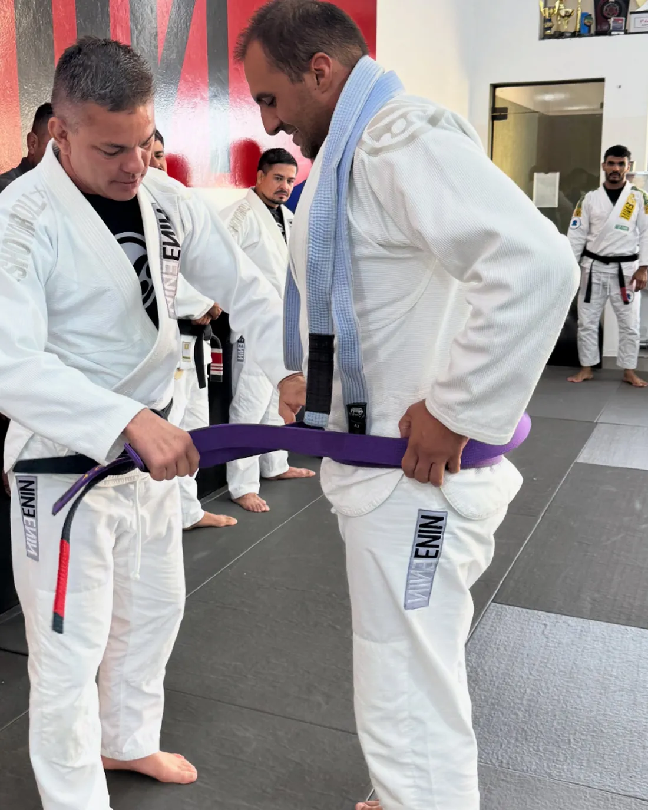
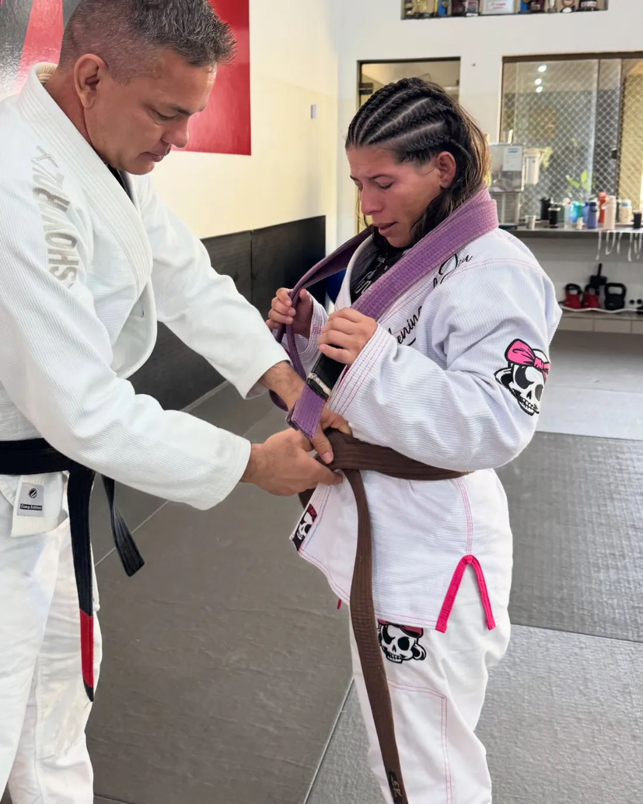
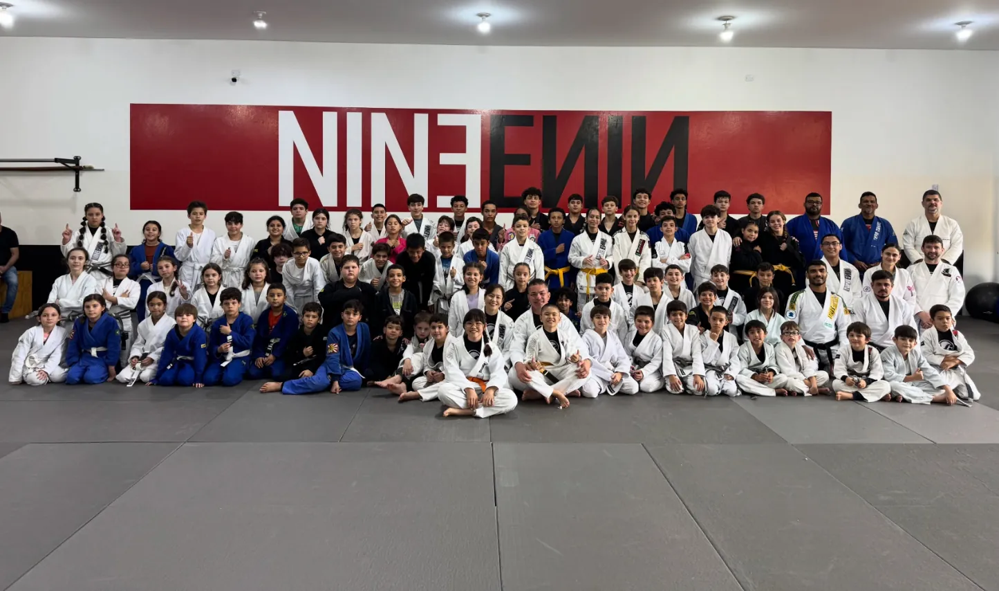

Jiu-Jitsu em Dourados.
Adulto, feminino, competição e kids. Equipe NineNine, com o professor Fernando Walevein, faixa-preta.


Tem aula de manhã, no almoço e à noite.
Toque na turma que cabe no seu dia. Ela vai junto na mensagem quando você agendar.
Horários da grade publicada pela academia no Instagram. Confirme pelo WhatsApp antes da primeira aula.


Do primeiro treino à competição.
Jiu-Jitsu e defesa pessoal, para quem nunca treinou e para quem já tem experiência. Nas palavras da academia: um tatame equipado com placas olímpicas e espaço amplo.
- ModalidadeJiu-Jitsu e defesa pessoal
- Para quemAdultos, mulheres e crianças
- Primeiro passoAula experimental, agendada pelo WhatsApp
Sempre há um lugar para você no tatame.
Graduação NineNine · maio de 2026
Azul.
Roxa.
Marrom.
Três faixas. Três pessoas. O mesmo gesto.
Quem amarra a faixa já passou por todas elas.




A família NineNine reunida na graduação kids de maio de 2026.
Uma equipe, uma casa.
A academia faz parte da equipe NineNine, liderada por Eduardo Telles, faixa-preta conhecido pela Turtle Guard e pela Octopus Guard. Em Dourados, as aulas são do professor Fernando Walevein.
- EquipeNineNine, de Eduardo Telles
- ProfessorFernando Walevein, faixa-preta
- EndereçoRua dos Missionários, 696 · Dourados/MS
- Instagram@99jiujitsu
Venha conhecer o tatame.
Mande uma mensagem para a academia e combine o dia da sua aula experimental.
Turma Ainda não escolhida escolher nos horários
Agendar aula experimental WhatsApp (67) 99634-1283- EndereçoRua dos Missionários, 696
Dourados/MSComo chegar - TreinosSegunda a sexta, de manhã, no almoço e à noite. Open mat no sábado, 09h–12h.
- Instagram@99jiujitsu